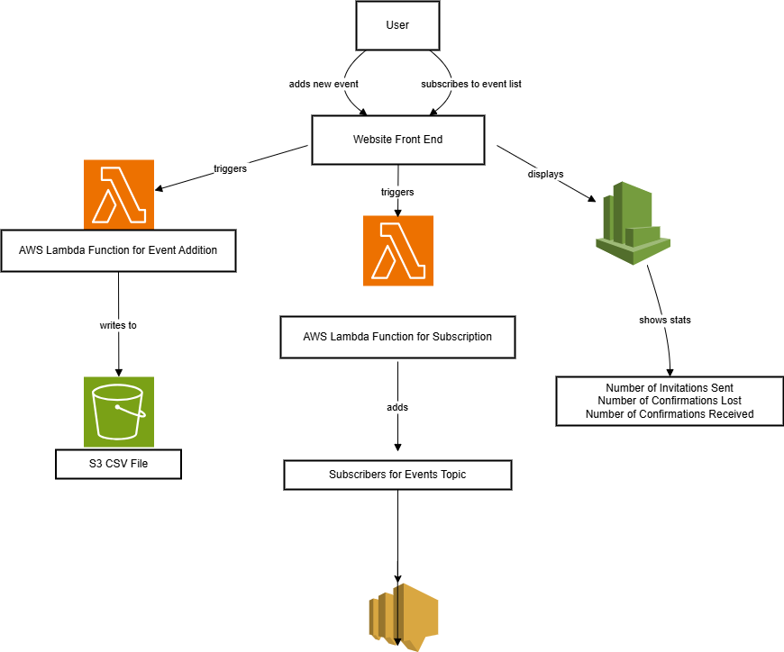

Scenario: Anycompany's Internal Engagement Platform
Company Profile: Anycompany Inc. is a mid-sized technology firm with around 500 employees distributed across multiple offices and remote locations. The company emphasizes strong internal communication, culture-building, and professional development.
Challenge: As Anycompany grew, internal communications became scattered. The HR team, department heads, and employee resource groups (ERGs) regularly organized various events such as: Town halls and leadership Q&As Departmental training sessions Employee wellness webinars Hackathons and innovation days Social gatherings (virtual and physical) ERG-hosted cultural events Despite having email and chat tools, employees often missed announcements, forgot to RSVP, or couldn’t keep track of events they were interested in.
Use Case: Event Creation: HR and team leads can easily create and schedule events with descriptions, times, locations (virtual or physical), and categories (e.g., Training, Social, Leadership). Subscriptions: Employees subscribe to topics they care about (e.g., tech talks, wellness, leadership). Notifications: Users get timely reminders via email, SMS, or in-app alerts when events are published, updated, or about to start. Engagement Metrics: Admins can view who subscribed, who attended, and get feedback to improve future events.
Benefits: Centralized event communication. Higher participation and engagement. Personalized notifications instead of spammy email blasts. Better visibility for event organizers.
Solution: Use Amazon Web Services to create a serverless solution to the problem. The user interacts from a web page that allows them to view events, create events and subscribe to the events. The page also shows a dashboard displaying relevant information about the events such as number of notifications delivered, number failed, etc. The solution uses AWS Lambda to update a file stored in Amazon S3 that contains a list of events. It also uses another lambda to submit requests to subscribe in SNS. And uses an Amazon CloudWatch dashboard to display metrics from the subscription. 